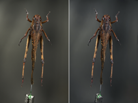
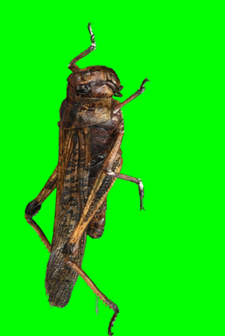
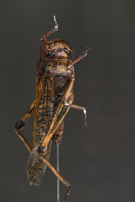

3D Gaussian reconstruction · native resolution
One locust.
Many viewpoints.
An interactive reconstruction study focused on preserving thin structures while keeping the scene clean and inspectable.
Explore in 3D
LOCUST reconstruction
Masking evidence
Keep the insect.
Lose the support.
Foreground masking was checked visually before reconstruction so thin legs and antennae stayed in the scene while the background and support were reduced.



Project report
From photographs
to novel views.
This individual project developed and evaluated a multi-view 3D Gaussian Splatting workflow for reconstructing a real locust. The central practical challenge was retaining legs and antennae while reducing background artifacts and evaluating novel-view quality.
The original report is kept in the project folder for reference and is not exposed through this website.
Starter project
Reproduce the path.
Prepare
Register the multi-view images and verify the COLMAP inputs and fixed holdout split.
Mask
Generate foreground masks with SAM2Matting, then inspect alignment and thin-structure retention.
Train + inspect
Run the native-resolution MRNF + PPISP workflow, export the PLY, and open it in SuperSplat.